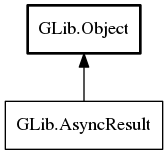

AsyncResult
Object Hierarchy:
Description:
Provides a base class for implementing asynchronous function results.
Asynchronous operations are broken up into two separate operations which are chained together by a
AsyncReadyCallback. To begin an asynchronous operation, provide a
AsyncReadyCallback to the asynchronous function. This callback will be
triggered when the operation has completed, and will be passed a AsyncResult instance filled with the
details of the operation's success or failure, the object the asynchronous function was started for and any error codes returned. The
asynchronous callback function is then expected to call the corresponding "_finish()" function, passing the object the function was called
for, the AsyncResult instance, and (optionally) an error to grab any error conditions that
may have occurred.
The "_finish()" function for an operation takes the generic result (of type AsyncResult) and returns the specific result that the operation in question yields (e.g. a FileEnumerator for a "enumerate children" operation). If the result or error status of the operation is not needed, there is no need to call the "_finish()" function; GIO will take care of cleaning up the result and error information after the AsyncReadyCallback returns. You can pass null for the AsyncReadyCallback if you don't need to take any action at all after the operation completes. Applications may also take a reference to the AsyncResult and call "_finish()" later; however, the "_finish()" function may be called at most once.
Example of a typical asynchronous operation flow:
void _theoretical_frobnitz_async (Theoretical *t,
GCancellable *c,
GAsyncReadyCallback cb,
gpointer u);
gboolean _theoretical_frobnitz_finish (Theoretical *t,
GAsyncResult *res,
GError **e);
static void
frobnitz_result_func (GObject *source_object,
GAsyncResult *res,
gpointer user_data)
{
gboolean success = FALSE;
success = _theoretical_frobnitz_finish (source_object, res, NULL);
if (success)
g_printf ("Hurray!\n");
else
g_printf ("Uh oh!\n");
...
}
int main (int argc, void *argv[])
{
...
_theoretical_frobnitz_async (theoretical_data,
NULL,
frobnitz_result_func,
NULL);
...
}
The callback for an asynchronous operation is called only once, and is always called, even in the case of a cancelled operation. On cancellation the result is a g_io_error_cancelled error.
I/O Priority # {io-priority}
Many I/O-related asynchronous operations have a priority parameter, which is used in certain cases to determine the order in which operations are executed. They are not used to determine system-wide I/O scheduling. Priorities are integers, with lower numbers indicating higher priority. It is recommended to choose priorities between g_priority_low and g_priority_high, with g_priority_default as a default.
All known implementing classes:

Namespace: GLib
Package: gio-2.0
Content:
Methods:
Inherited Members:
All known members inherited from class GLib.Object